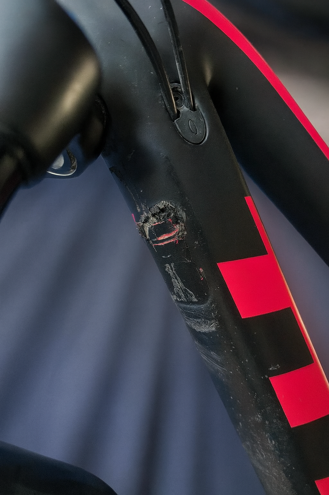
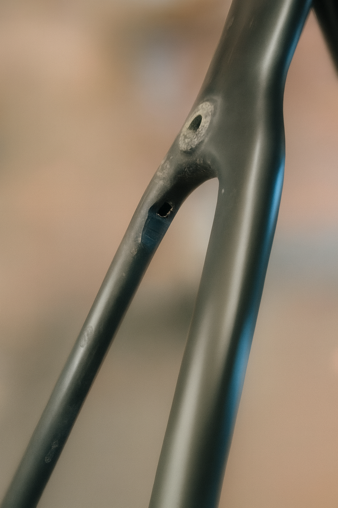

Notre approche
Un diagnostic précis avant chaque intervention.
Contrairement à ce que plusieurs pensent, le carbone se répare très bien. Nous restaurons l'intégrité structurale de votre cadre en appliquant des méthodes de réparation éprouvées : découpe contrôlée, préparation des plis, stratification orientée, cure et finition.
Avant chaque intervention, nous établissons un diagnostic précis : photos, localisation, contrôle tap-test. Vous savez exactement ce qui sera fait, avant que le travail commence.
En savoir plus sur notre processusServices
Ce que nous faisons pour votre cadre.
Des interventions ciblées sur vos composants carbone, avec la rigueur d'un atelier de composites de haute précision.
Diagnostic structurel
Photos, localisation, contrôle tap-test. Évaluation complète de l'étendue des dommages avant toute intervention.
Nous contacter →Réparation structurale
Fissures, impacts, délamination – réparation avec stratification orientée et époxy adaptée, polymérisation sous vide.
Nous contacter →Finition et contrôle
Ponçage, vernis ou peinture locale, inspection finale. Le cadre est rendu avec des recommandations d'usage.
Nous contacter →Exemples
Des bris que nous pouvons réparer.
Voici quelques exemples de types de bris que nous avons traités avec succès. Chaque cas est unique, contactez-nous pour évaluer le vôtre.


